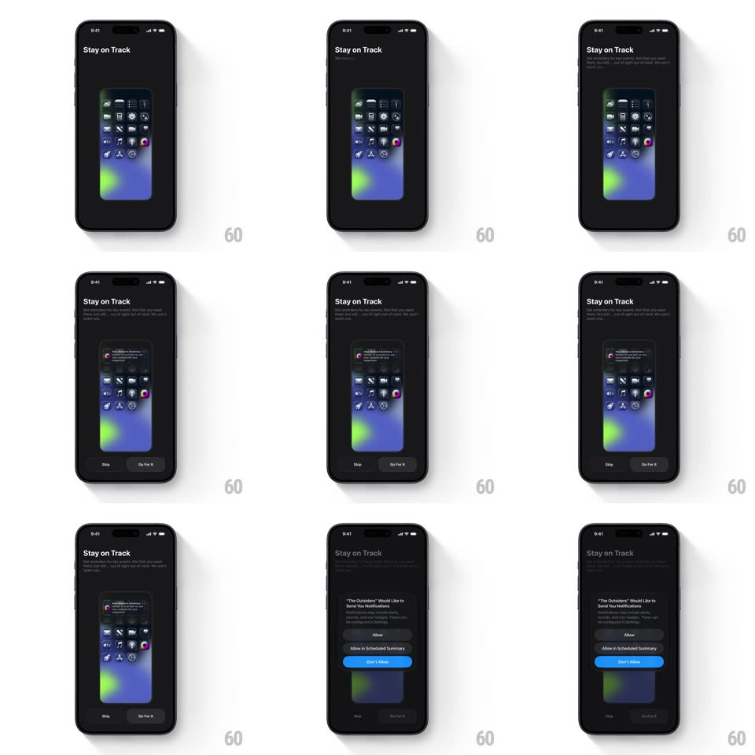

Media
Frame-by-frame

Rebuild this animation 1:1: The Outsiders' notifications onboarding - "Stay on Track" and its body copy type in, a mini iPhone mockup rises with a simulated notification banner sliding down its screen, Skip and Go For It buttons appear, and Go For It slides up the native iOS permission prompt.

Rebuild this animation 1:1: The Outsiders' notifications onboarding - "Stay on Track" and its body copy type in, a mini iPhone mockup rises with a simulated notification banner sliding down its screen, Skip and Go For It buttons appear, and Go For It slides up the native iOS permission prompt.
## Integration
Integration: stack-agnostic spec - springs given as stiffness/damping, timed motions as duration + curve; map every value to your framework and animation library of choice.
## Scene
Black screen: "Stay on Track" headline with typed body copy, a centered miniature iPhone showing a home screen, and a simulated notification banner ("The Outsiders - readiness summary") sliding down over the mockup. Bottom buttons: "Skip" and "Go For It". Final state: the native iOS alert "The Outsiders Would Like to Send You Notifications" with Allow / Allow in Scheduled Summary / Don't Allow.
## Motion spec
Pattern: typed intro with simulated banner, ~2.2s.
- Headline: types in character by character (~40ms/char) with a block cursor; the body paragraph follows the same typing (faster, ~15ms/char).
- Mockup: the mini iPhone rises 40px and fades in (400ms, ease-out) after the headline completes.
- Banner: the notification slides down from the top edge of the mockup (spring ~360/20, slight overshoot) and holds.
- Buttons: Skip and Go For It fade up (250ms, 80ms stagger).
- Prompt: tapping Go For It dims the screen (scrim 50%) and slides the native prompt up (spring ~380/28, 350ms).
## Calibration
- The banner slides inside the mockup's screen bounds, clipped by them.
- Typing never overlaps: headline completes before body starts.
## Reduced motion
Headline and body fade in whole (300ms); banner fades in; prompt appears without slide.
## Don't miss
- The cursor blinks while typing and disappears when done.
- The simulated banner is a fake notification - the real system prompt only appears after Go For It.